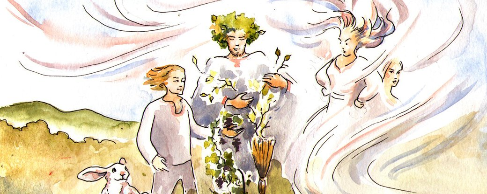

"Володар перснів", "Доктор Стрендж", "Світ Юрського періоду": на Супербоулі показали нові трейлери
14 лютого у Інглвуді пройшов фінал чемпіонату Національної футбольної Ліги США. За традицією, це не лише матч, а й культурна подія, під час якої виступають артисти, а кіностудії показують трейлери своїх фільмів у перерві.
Зазвичай Супербоул транслюють телеканали в усьому світі. Загальна кількість телеглядачів перевищує мільярд осіб, тому 30 секунд ефірного часу у перерві Супер Кубка цьогоріч обійшлися рекламодавцям у 6,5 мільйона доларів. Для порівняння, 2021-го ця сума становила 5,33 мільйона.
"Доктор Стрендж у мультивсесвіті божевілля"
Доктор Стівен Стрендж продовжує пошуки Каменя Часу і виправлення наслідків звільнення мультивсесвіту, але йому заважає друг, що став ворогом, внаслідок чого Стрендж вивільняє невимовне зло. Прем'єра очікується 5 травня 2022 року.
"Місячний Лицар"
У центрі сюжету Стівен Ґрант, непримітний працівник сувенірного магазину, який страждає від провалів у пам'яті та спогадів про інше життя. Стівен виявляє, що він має дисоціативний розлад особистості, і він розділяє тіло з найманцем Марком Спектором. Коли вороги Стівена/Марка зберуться проти них, їм буде необхідно розібратися зі своєю складною ідентичністю, занурившись у смертельну таємницю серед могутніх богів Єгипту. Серіал вийде на Disney+ 30 березня.
"Володар Перснів: Персні влади"
Сюжет серіалу базуватиметься на історії сходження Саурона за тисячі років до подій "Гобіта" та трилогії "Володар Перснів". Також обіцяють показати створення перснів влади та останній союз поміж людьми й ельфами. Серіал від Amazon стартує 2 вересня.
Джерело: Суспільне
Що робити, якщо святкуєш День святого Валентина на самоті
Нові часи диктують нам нові правила. Раніше День усіх закоханих без другої половинки видавався катастрофою, яку треба було відвернути будь-якими зусиллями. Сьогодні це вже не страшно. Навпаки, якщо вийшло так, що проводиш День святого Валентина 14 лютого без коханої людини, це хороший привід влаштувати собі свято — і не засмучуватись, адже все починається з любові до себе. А зі сценарієм ми допоможемо.
1. Послухати Стіві Вандера
Що ви знаєте про Стіві, окрім того, що він — сліпий геній поп-музики й автор "I Just Called to Say I Love You"? Між іншим, у нього дуже багато чуттєвих платівок, з яких ми особливо радимо послухати "Talking Book" (1972). Вона належить до "класичного періоду" Вандера та загоює будь-які душевні рани, зцілює психологічні травми, якщо впустити цю музику прямо в серце.
Майже всі пісні на "Talking Book" присвячені романтичним ідеалам кохання, про що свідчать навіть їхні назви: "You Are the Sunshine of My Life", "You and I (We Can Conquer the World)", "Lookin’ for Another Pure Love". Це може видаватись трохи наївним, але коли чуєш, як ця ідеалістична лірика резонує з музичною частиною, питання зникають.
2. Влаштувати танцювальну вечірку в піжамі
Самотнє свято всіх закоханих — це часто привід для болючих роздумів на тему "Ну що зі мною не так, я ж начебто непогана людина, не роблю нікому шкоди, нормально виглядаю, книжки читаю та дивлюсь цікаві фільми, чому ж я один/одна?". Ці думки треба відпустити, адже люди, по-перше, зустрічаються на життєвому шляху не за логікою, а, радше, всупереч логіці, а по-друге, важливо спочатку полюбити себе. Критичне ставлення до своєї персони, можливо, де в чому і може бути корисним, але якщо ви постійно звинувачуєте й зневажаєте себе, то як можна покохати когось іншого?
У таких випадках слід починати з найочевиднішого: з уроків прийняття себе. Вдягніть свої найкращі або улюблені речі та ввімкніть особливу музику — що-небудь з гуртів Hot Chip і Metronomy (або українські Our Atlantic, komissiya, Один в Каное або Tember Blanche), які роками записують пісні, під які так чудово танцювати у піжамі та капцях. Подуркуйте, відчуйте своє тіло, не соромтесь виглядати безглуздо. У крайному випадку терміново запросіть до себе таких же самотніх друзів — і танцюйте у піжамах разом.
3. Дарувати подарунки
Звісно, є ризик, що ваші друзі, які також залишись без пари, не підтримають концепцію "вечірки для самотніх". Скажуть, що це повна маячня і гіршої ідеї вони ще не чули (і що набагато краще не скиглити разом про своїх колишніх, а рухатись далі, знайомитись з кимось й усяке таке). Поставтесь до цього з розумінням: їм просто важко визнати факт своєї самотності. І просто відправте до друзів кур’єра з особливим подарунком. Смачної піци, шоколаду чи навіть просто квітів буде цілком достатньо.
Джерело: Суспільне
День Святого Валентина: історія та цікаві факти про свято
День святого Валентина 14 лютого є неофіційним святом усіх закоханих, яке пройшло крізь століття, і сьогодні широко відзначається у всьому світі. Цей день, коли згадують ім’я святого, за популярністю може позмагатися хіба що з Днем Святого Миколая. Суспільне зібрало цікаві факти про історію виникнення найромантичнішого свята та традиції його святкування у різних країнах.
Достеменна історія цього свята досі невідома, проте у більшості переказів та легенд його "винуватцем" називають ранньохристиянського мученика Валентина — єпископа з італійського міста Терні (місто розташоване неподалік Риму – ред.), який жив у III столітті.
Згідно з цією версією, святкування Дня закоханих почалося в Римській імперії у 270 році до нашої ери, за часів царювання Клавдія II (268-270 рр.). Під час ведення війни Клавдій начебто не хотів, щоб солдати вступали в шлюб, бо вважав, що одруження робить їх слабкими та обтяжує сімейним побутом.
Однак священнослужитель, на ім'я Валентин таємно вінчав закоханих. Коли правитель про це дізнався, єпископа схопили, піддали жорстким тортурам і згодом обезголовили за "антидержавницьку" діяльність. У ніч перед стратою, яка відбулася 14 лютого між 269 року, він написав дівчині, ймовірно, дочці тюремного наглядача, з якою подружився в ув’язненні, любовного листа у віршованій формі та підписав його: "Твій Валентин". Згодом такі листи отримали назву "валентинки".
У 496 році Папа Геласій I заснував День пам’яті Святого Валентина, якого вшановують 14 лютого. Вважається, що він зробив це, аби витіснити язичницьке свято римських "люперкаліїв", яке щорічно відзначалося 15 лютого. Натомість образ святого Валентина мав підкреслити духовний вимір кохання між чоловіком та жінкою.
Джерело: Суспільне
У Львівському муніципальному мистецькому центрі вирішили призупинити виставку Чичкана після нападу
Врані 13 лютого невідомі напали на Львівський муніципальний мистецький центр. Директорка артцентру Ляна Мицько записала відео з позицією щодо нападу на YouTube-каналі lvivart.center.
За словами директорки артцентру Ляни Мицько, "праві тверезі молоді люди" напали на культурний центр, коли всередині не було відвідувачів. Зловмисники зірвали веселковий прапор, погрожували адміністраторці, розбили телефон відвідувача, який намагався захистити дівчину, зламали вішак та заклеїли вхід агітаційними матеріалами.
Повідомляється, що інцидент був спровокований зокрема виставкою художника Давида Чичкана "Стрічки та трикутники", яка розпочалась 4 лютого.
Джерело: Суспільне
Історії про цісаря та гуцулів. Народні казки Буковини та Прикарпаття можна послухати онлайн
Народні казки, які збирав буковинський письменник Михайло Івасюк, можна послухати онлайн. Це фольклор, який переповідали своїм дітям жителі Буковини та Верховини. Івасюк упорядкував та видав їх.
Казки озвучили журналісти Суспільне Буковина та опублікували на каналі у YouTube.
Михайло Івасюк захопився казками, які розповідала мама. Вона була неписьменною, але знала напам'ять багато народних історій. Зібрані казки письменник видав у книзі "Казки Буковини. Казки Верховини".
У плейлисті Суспільного зібрано 10 казок різної тривалості. Деякі з них можна прослухати за хвилину, інші — за 20. Кожна казка ілюстрована малюнками, які створив чернівецький аквареліст Павло Півень.
Казки наповнені місцевими фразеологізмами та гумором. У них засуджують жадібність та дурість, їм протиставляють щирість та кмітливість. Поширеними сюжетами є боротьба між багатими та бідними. Також у сюжетах згадуються села Буковини та народний побут жителів області — тайстри, шапка-кучма, цимбали.
Джерело: Суспілнье